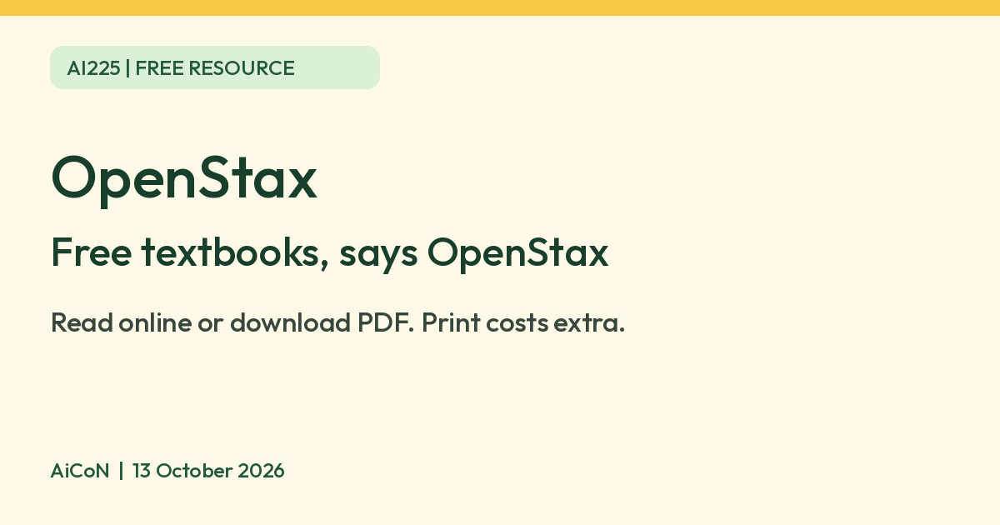

OpenStax: free textbooks from a Rice University nonprofit
OpenStax, a Rice University nonprofit, says every textbook in its library is free to read online or download as a PDF. Print copies cost extra. Check the syllabus fit and licence.

Official OpenStax icon
What it is
OpenStax is a nonprofit education initiative of Rice University in the US. It publishes peer-reviewed, openly licensed textbooks. Its own pages say the books are written by experts, reviewed by educators, and "shared freely with learners around the world". This guide covers the free textbook library, not an AI tool. OpenStax also offers other learning services; their features and terms are outside this guide.
Is it free?
Yes. OpenStax's About page says: "Every textbook in our library is free to read online or download as a PDF." Its subjects page says "100% free". A printed copy is optional and costs money: OpenStax says to "order one at a low cost". We did not look up print prices or shipping to India.
Who it suits
- Students, parents and self-learners who want a textbook without paying for one.
- The books follow US college and high school course outlines, so they may not match an Indian syllabus. Check the contents page before you rely on one.
- We did not find an age limit or an India-specific statement. OpenStax says its books are shared with learners around the world.
Licence
OpenStax calls its books openly licensed, and its licence page says its licensing recently changed. We did not read each book's licence. Check the licence on the book you use before you copy, print or share it.
Privacy and data
- OpenStax's privacy notice covers its website, digital textbooks and accounts. It says it collects account details when you make an account, and uses Google Analytics, which uses Google advertising cookies and identifiers.
- It says it may send you communications about OpenStax products if you have an account, and asks for consent where the law requires it.
- We did not confirm whether you can read a book without an account. AiCoN advice: check whether the book offers direct reading or a PDF before making an account. Read the privacy notice if you do sign up.
Frequently asked questions
Are OpenStax textbooks free?
Yes, OpenStax says every textbook is free to read online or download as a PDF.
Is a print copy free?
No. OpenStax says print copies are available at a low cost.
Is it AI?
No. It is a free textbook library. We included it because it is a free learning resource from an official source.
How to start
- Open the official textbooks page and choose a subject, then a book.
- Compare its contents and edition with your syllabus. Do not assume a US course outline matches an Indian exam.
- Look for online reading or PDF download. Account requirements were not confirmed by AiCoN.
- Check that book's licence before copying, printing or sharing it. Print orders are optional and cost extra; India shipping and prices were not checked.
What changed since this post?
About, subjects, licence and privacy pages rechecked on 13 October 2026. OpenStax still says every textbook is free to read online or download as a PDF. Print copies cost extra. The licence page says its licensing recently changed, so check each book rather than assuming one licence for the whole library. India-specific availability, account requirements and individual book licences remain unconfirmed. No book reading, download or print-order flow was tested by AiCoN.
Sources: OpenStax About, OpenStax subjects, OpenStax licence, OpenStax privacy notice. Checked 13 October 2026.